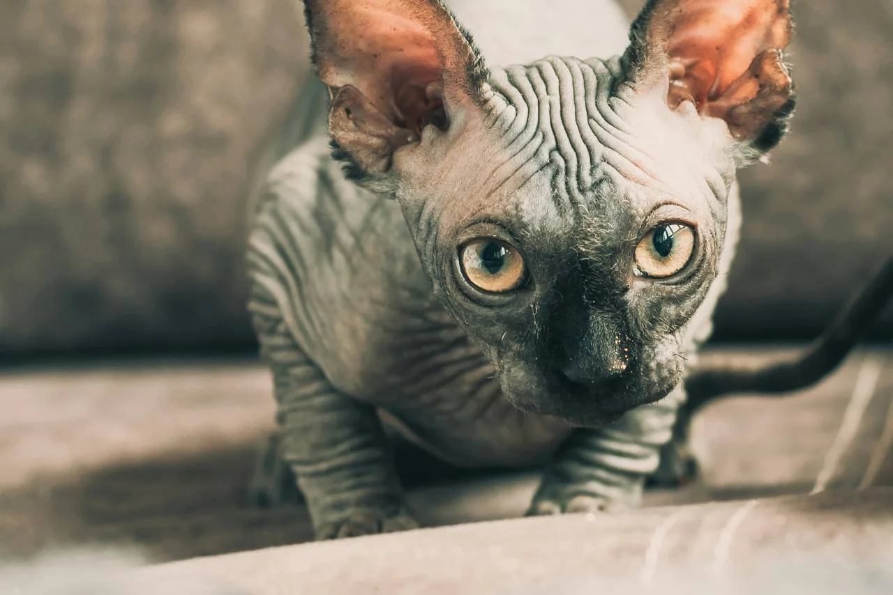

호박색 눈동자 뒤에는 천년의 이집트 지혜가 숨겨져 있다고, 보호소 봉사자들은 그렇게 주장하길 좋아했다.
[Behind these amber eyes lies a thousand years of Egyptian wisdom, or so the shelter volunteers liked to claim.]
사실은 밀워키 출신으로, 먼지와 잊혀진 꿈들의 냄새가 가득했던 사육자의 지하실에서 태어났다.
[Truth is, I’m from Milwaukee, born in a breeder’s basement where the air smelled of dust and forgotten dreams.]
한 번도 살아보지 못한 신비를 담은 지형도 같은 내 주름진 피부는 인간들이 믿고 싶어하는 이야기들을 들려준다.
[My wrinkled skin, a topographical map of mysteries I’ve never lived, tells stories that humans love to believe.]
사람들은 나를 파라오라고 불렀다 - 정말 독창적이지 않은가 - 하지만 나는 밥처럼 좀 더 소박한 이름으로 불리는 걸 선호한다.
[They named me Pharaoh – how original – but I prefer to think of myself as something more modest, like Bob.]
고대 사막의 모래처럼 회색 피부를 가로지르는 주름은 아이들을 숨죽이게 하고 어른들을 수군거리게 만든다.
[The wrinkles rippling across my grey skin like waves in ancient desert sand make children gasp and adults whisper.]
그들은 마치 점자를 읽듯이 내 맨살의 굴곡을 손가락으로 더듬으며, 내가 존재할 줄도 몰랐던 죽은 신들의 메시지를 찾는다.
[Their fingers trace the ridges of my bare flesh as if reading braille, searching for messages from long-dead gods who never knew I’d exist.]
나를 입양한 여자는 수집광이다: 크리스탈 해골들, 타로카드,그리고 지금은 살아있는 대화 상대인 나까지.
[The woman who adopted me collects oddities: crystal skulls, tarot cards, and now me – her living conversation piece.]
그녀는 친구들에게 내가 텔레파시 능력이 있고, 죽음이 다가오는 것을 감지할 수 있으며, 영적 세계와 연결되어 있다고 말한다.
[She tells her friends I’m telepathic, that I can sense death coming, that I’m connected to the spirit world.]
사실, 나는 그저 어두운 구석에 있는 쥐를 더 잘 발견하고 그녀가 참치캔을 열려고 할 때를 아는 것뿐이다. 하지만 나는 그녀가 그렇게 믿도록 내버려 둔다. 때로는 인간들이 스스로에게 하는 이야기가 진실보다 더 중요하니까.
[Really, I’m just better at spotting mice in dark corners and knowing when she’s about to open a can of tuna. But I let her believe. Sometimes the stories humans tell themselves are more important than the truth.]
나는 벨벳 쿠션 위에 앉아서, 그림처럼 세상을 담아내는 창문을 통해 삶이 펼쳐지는 것을 보며 하루를 보낸다.
[I spend my days perched on velvet cushions, watching life unfold through windows that frame the world like paintings.]
햇빛과 그림자를 모두 반사하는 호박색 눈동자로, 나는 일상의 기적들을 관찰한다: 햇살 속에서 춤추는 먼지 입자들, 수학적 정밀함으로 거미줄을 짜는 거미들, 눈앞의 진정한 마법을 놓치면서도 신비를 믿으며 짧은 삶을 서두르는 인간들.
[My eyes, amber pools that reflect both sunlight and shadows, observe the ordinary miracles: dust motes dancing in sunbeams, spiders weaving webs of mathematical precision, humans rushing through their brief lives believing in mysteries while missing the real magic right in front of them.]
아마도 그것이 내가 가진 유일한 진정한 지혜일 것이다 - 비범함이란 고대의 저주나 신비한 힘이 아니라, 그저 살아있다는 것의 경이로움을 보는 것임을 아는 것.
[Maybe that’s the only true wisdom I possess – knowing that being extraordinary isn’t about ancient curses or mystical powers, but about seeing the wonder in simply being alive.]